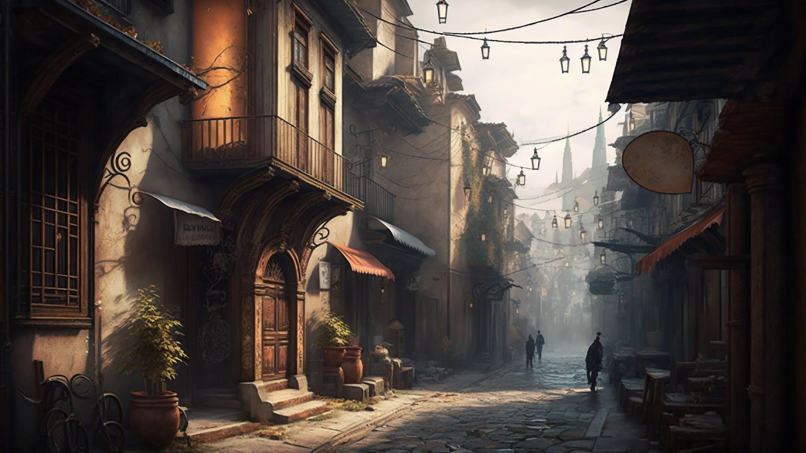

No coração da Europa, escondida entre densas florestas e montanhas antigas, havia uma cidade que muitos já haviam esquecido. Belverde era seu nome, uma cidade de beleza encantadora e mistérios profundos, envolta em uma aura de magia e encantamento.
A lenda diz que Belverde foi fundada há muitos séculos por um grupo de artesãos e magos que buscavam um lugar tranquilo para criar e praticar seus conhecimentos. Eles escolheram um vale escondido